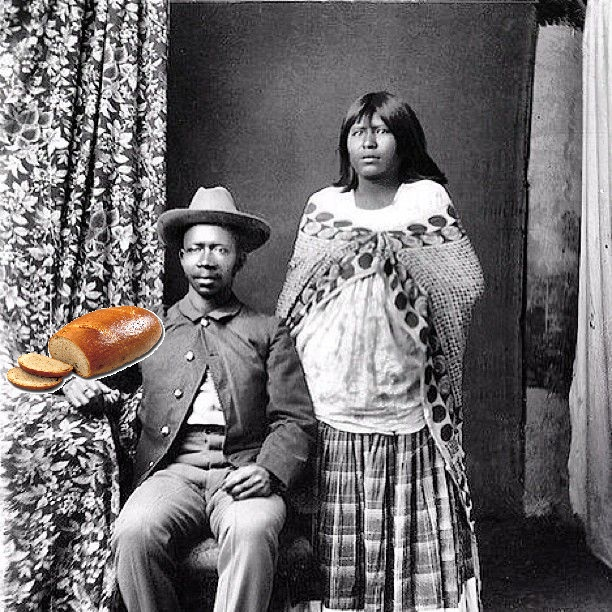

¿Quiénes somos?
Somos una empresa 100% Mexicana, la cual distribuye uno de los alimentos favoritos, de todos los mexicanos, el tradicional pan.
Aceptamos pedidos por télefono, apps de distribución de alimentos y obviamente compras presenciales, hay gran variedad de pan, OjO
solo de la mejor calidad, porque nuestro compromiso con el cliente es lo más importante para nosostros.
¿Qué hacemos?
Hacemos pan, pero no solo eso, hacemos pedidos especiales, además de vender otros productos tales como:
- Jugos de frutas
- Panninis
- Leche fresca
- y los riquisimos Pasteles especiales a gusto del cliente ó la receta secreta
Nuestra Historia
La panadería el Globito fue fundada en 1842, por don Faustino Murrieta, el cuál (para salir de la pobreza que azotaba a su familia) decidió, utilizar una vieja tradición
familiar, dicha accion consistia en preparar dos tipos de productos provenientes del trigo; sin condimentos y otro con azucar.
Los comenzó a vender, también se dice que don Faustino fue quien comenzó con la venta de tortas, ya que la receta familiar (el bolillo) se le comenzó a agregar queso y jamón.
En cuanto al pan dulce, empezó con panes en forma de champiñón, los cuales fueron nombrados mantecadas ya que estaban hechas de manteca.
Gracias a Don Faustino y su descendencia hoy disfrutamos de las manteconchas y pasteles basados en el Covid-19.

El fundador, su esposa y un pan